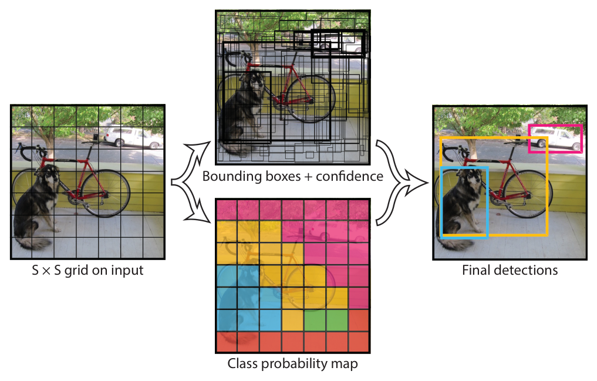
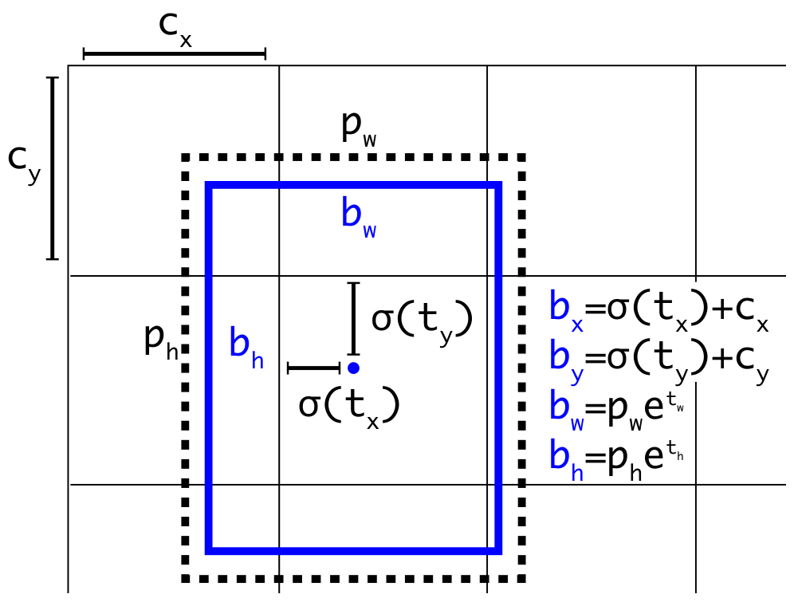
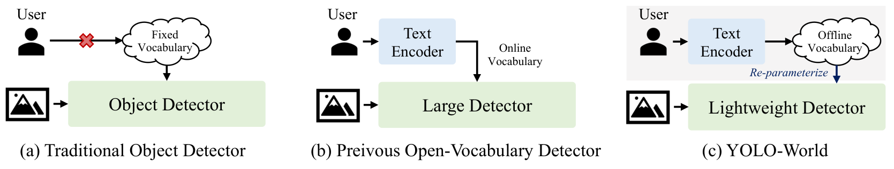
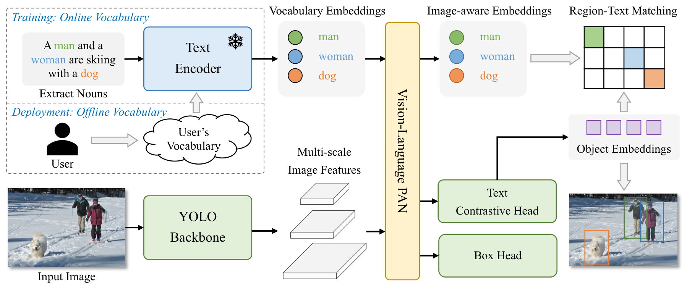
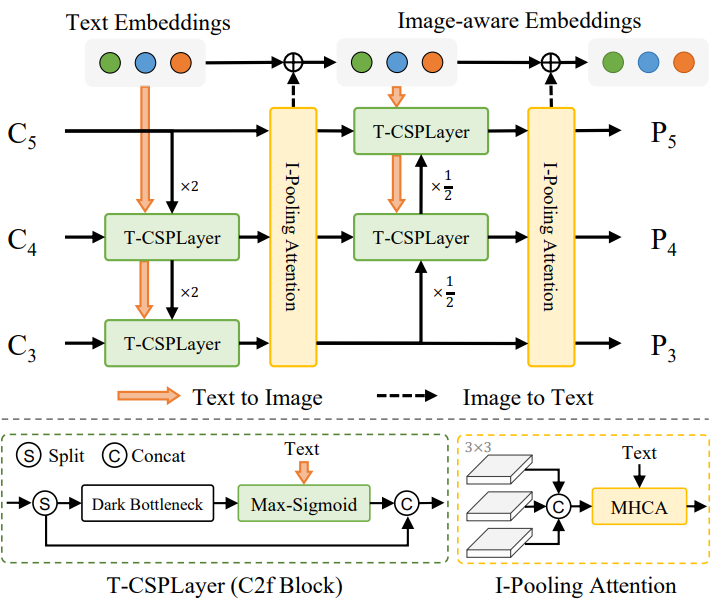

Calcular la salida de YOLO a partir de su rejilla.
Aplicar NMS a mano y elegir un YOLO para un caso.
El problema
Clasificar dice qué; detectar dice qué, dónde y cuántos
El problema
Un solo objeto: clasificar y localizar a la vez
La caja se trata como una regresión: 4 números y una pérdida L2.
Foto: Oxford-IIIT Pet Dataset (Parkhi et al., 2012), CC BY-SA 4.0. Esquema adaptado de CS231n (Stanford).
El problema
Casi siempre hay más de un objeto
Con un objeto bastaban 4 números. Con varios, no sabemos cuántas cajas habrá.
El problema
¿Dónde buscar los objetos?
Ventanas deslizantes: revisar cada posición y tamaño. Miles de ventanas.
Propuestas de regiones:Selective Search une manchas vecinas parecidas en color y textura; cada grupo es una región (~2,000).
Cada región se revisa por separado.
El problema
R-CNN: una pasada de la CNN por cada región
Girshick et al. (2014). Esquema adaptado de CS231n (Stanford).
El problema
Fast R-CNN: la CNN corre una vez por imagen
Girshick (2015): 0.3 s por imagen sin contar las propuestas; 213× al evaluar con VGG16. Esquema adaptado de CS231n (Stanford).
El problema
Faster R-CNN: una red también propone las regiones
La red de propuestas (RPN) reemplaza a Selective Search y usa la misma CNN que el detector.
RPN de Ren et al. (2015): K = 9 anclas (3 escalas × 3 proporciones), 300 propuestas, 5 imágenes/s en GPU. Esquema adaptado de CS231n.
Punto de control
Faster R-CNN ya no usa Selective Search. ¿Por qué se sigue llamando un detector de dos etapas?
B.Correcta. Las dos etapas son proponer y luego revisar cada propuesta. Un detector de una etapa, como YOLO, predice clase y caja directo en cada celda, en un solo paso.
A.Incorrecta. La CNN corre una sola vez y sus características se comparten entre las dos etapas.C.Incorrecta. Eso describe a R-CNN; desde Fast R-CNN la clase sale de una capa lineal con softmax.
Mirar una sola vez
YOLOv1, Redmon et al. (2016)
Mirar una sola vez
Una red ve toda la imagen y predice todo a la vez

Rejilla → cajas con confianza + clase por celda → detecciones. Figura de Redmon et al. (2016).
La imagen entra a 448 × 448 a una sola CNN: 24 capas convolucionales y 2 totalmente conectadas.
La salida es un tensor con todas las cajas y clases.
45 imágenes por segundo: 0.022 s por imagen. La versión pequeña, 155 (0.006 s).
Mirar una sola vez
Cada celda responde por el objeto cuyo centro cae en ella
Mirar una sola vez
Una etapa: cada celda predice cajas y clases
Redmon et al. (2016), YOLO, CVPR. Esquema adaptado de CS231n.
Mirar una sola vez
Cada celda predice 30 números
Mirar una sola vez
IoU mide cuánto se enciman dos cajas
\[ \mathrm{IoU} = \frac{\text{área de la intersección}}{\text{área de la unión}} \]
Posición inicial: intersección 12, unión 16 + 16 − 12 = 20, IoU = 0.60. Vale 1 si las cajas son idénticas y 0 si no se tocan.
Todo es error cuadrático: el paper trata la detección como una regresión.
\( \lambda_{\text{coord}} = 5 \): equivocarse de lugar cuesta más. \( \lambda_{\text{noobj}} = 0.5 \): casi todas las celdas están vacías y no deben dominar.
La confianza que se aprende es el IoU entre la caja predicha y la real.
Se predice la raíz del ancho y del alto: un error de 10 píxeles pesa más en una caja chica.
Punto de control
Un YOLOv1 usa S = 7, B = 3 cajas por celda y C = 80 clases. ¿Cuántos números produce por imagen?
C.Correcta. Cada caja lleva 5 números (centro, ancho, alto y confianza) y las 80 clases van una sola vez por celda: 3 × 5 + 80 = 95 por celda, por 49 celdas.
A.Incorrecta. Repite las clases en cada caja; eso lo hacen versiones posteriores, no YOLOv1.B.Incorrecta. Olvida la confianza de cada caja: son 5 números por caja, no 4.
De muchas cajas a una
Supresión de no máximos (NMS)
De muchas cajas a una
El algoritmo de NMS en cuatro pasos
Ordena las cajas por confianza, de mayor a menor.
Guarda la de mayor confianza.
Borra las que se enciman con ella: IoU mayor al umbral (p. ej. 0.5).
Repite con las que quedan. Se hace por clase: un perro no borra a un gato.
def nms(cajas, conf, umbral=0.5):
orden = sorted(range(len(cajas)), key=lambda i: -conf[i])
guardadas = []
while orden:
mejor = orden.pop(0)
guardadas.append(mejor)
orden = [i for i in orden if iou(cajas[mejor], cajas[i]) <= umbral]
return guardadas
De muchas cajas a una
Guarda la mejor caja y borra las que la repiten
NMS usa un umbral de IoU (aquí 0.5). En YOLOv1 sube el mAP de 2 a 3 puntos.
Actividad · 10 min
Aplica NMS a mano
Calcula el IoU de las parejas que se tocan.
Aplica NMS con umbral 0.5. ¿Qué queda?
Repite con 0.7 y 0.05. ¿Qué falla?
Modalidad: en parejas, en papel.
De muchas cajas a una
El umbral decide qué se borra
Compara tus respuestas: con 0.7 sobreviven duplicados; con 0.05 se pierde F, que es otro objeto.
La arquitectura moderna
Backbone, neck y head
La arquitectura moderna
Tres partes, tres trabajos distintos
El backbone extrae características, el neck las combina entre escalas y la head predice. Números de una entrada de 640 × 640 con pasos de 8, 16 y 32 píxeles.
La arquitectura moderna
Las anclas daban una forma inicial a cada caja

La caja punteada es el ancla; la azul, la predicción. Figura de Redmon y Farhadi (2018).
Un ancla es una forma típica de caja; la red solo predice cuánto moverla y estirarla.
YOLOv3 elige 9 anclas con k-means y predice en 3 escalas: 10,647 cajas a 416 × 416.
YOLOv6 y YOLOv8 ya no usan anclas: cada punto predice su caja directamente.
La arquitectura moderna
La red no predice el ancho: predice cuánto estirar el ancla
\( e^{t_w} \) siempre es positivo: con \( t_w = 0 \) el ancla no cambia y el ancho nunca se vuelve negativo. Igual para el alto: \( b_h = p_h\, e^{t_h} \). YOLOv2 y v3.
La arquitectura moderna
Para quitar NMS, cada objeto debe tener una sola respuesta
Punto de control
El mismo detector (pasos de 8, 16 y 32, una predicción por punto) recibe una imagen de 1280 × 1280 en vez de 640 × 640. ¿Cuántas predicciones produce?
A.Correcta. Al duplicar el lado, cada rejilla duplica sus filas y sus columnas: 160² + 80² + 40² = 33,600, cuatro veces más.
B.Incorrecta. Supone que crece igual que el lado, pero crece con el área.C.Incorrecta. Supone que la red fija el número de predicciones; lo fija el tamaño de la imagen.
Diez años de YOLO
Qué cambió y cuál usar hoy
Diez años de YOLO
El mismo nombre, muchos equipos distintos
Fechas de la primera publicación (arXiv o lanzamiento). El número de versión no dice quién la hizo ni si es mejor que la anterior.
Diez años de YOLO
Cuatro ideas cambiaron el diseño
Idea
Qué resolvió
Desde
Rejilla y una sola pasada
Velocidad: 45 imágenes por segundo
YOLOv1 (2015)
Anclas y tres escalas
Objetos chicos y formas variadas
YOLOv2 y v3 (2016–2018)
Sin anclas
Ya no hay que diseñar anclas para cada dataset
YOLOv6 y v8 (2022–2023)
Sin NMS (uno-a-uno)
Salida directa y latencia estable
YOLOv10 (2024), YOLO26 (2026)
Entre medio, cada versión cambió el backbone, el entrenamiento y los datos. YOLOv12 (2025) llevó la atención al centro del diseño.
Diez años de YOLO
Las clases ya pueden escribirse como texto

(a) clases fijas · (b) texto en cada uso, detector pesado · (c) YOLO-World: el texto se codifica una vez y se integra al detector. Figura de Cheng et al. (2024).
Con vocabulario abierto, las clases son frases: «botella de plástico», «persona con casco».
YOLO-World: 52 imágenes por segundo en una GPU V100.
Diez años de YOLO
YOLO-World compara cada caja con las palabras

Arriba, el texto (codificador de CLIP, congelado); abajo, la imagen (backbone de YOLO). La PAN los mezcla y cada caja se compara con cada palabra en la matriz región–texto. Al desplegarlo, el vocabulario del usuario se codifica una sola vez. Figura de Cheng et al. (2024).Diez años de YOLO
RepVL-PAN: el texto y la imagen se corrigen

Figura de Cheng et al. (2024).
Texto → imagen (naranja): cada T‑CSPLayer resalta lo que se parece a alguna palabra.
Imagen → texto (punteada): I‑Pooling resume la imagen en 27 regiones y actualiza el texto.
El texto ya «vio» la imagen antes de compararse con cada caja.
Diez años de YOLO
Tres preguntas para elegir un YOLO
Diez años de YOLO
Cada tamaño cambia velocidad por precisión
YOLO26
n
s
m
l
x
Parámetros (millones)
2.4
9.5
20.4
24.8
55.7
mAP 50–95 en COCO
40.9
48.6
53.1
55.0
57.5
CPU, ONNX (ms)
38.9
87.2
220.0
286.2
525.8
GPU T4, TensorRT (ms)
1.7
2.5
4.7
6.2
11.8
De n a x: 23 veces los parámetros y 16.6 puntos más de mAP, pero 13.5 veces más lento en CPU.
Imágenes de 640 × 640, salida sin NMS. Documentación de Ultralytics, consultada en octubre de 2026.
Punto de control
Una tienda quiere contar personas con una Raspberry Pi sin GPU, en un producto que va a vender con código cerrado. ¿Qué haces?
B.Correcta. Sin GPU manda el tamaño: n tarda unos 39 ms por imagen en CPU. Y AGPL-3.0 obliga a compartir el código: compra la licencia Enterprise o usa una alternativa Apache-2.0.
A.Incorrecta. Ignora el hardware: x tarda más de medio segundo por imagen en CPU.C.Incorrecta. Paga el costo del vocabulario abierto sin necesitarlo: «persona» ya es una clase fija.
Ideas clave
Una pasada, una caja por objeto
YOLO convierte la detección en una sola predicción: una rejilla de cajas, confianzas y clases.
IoU mide el traslape; NMS lo usa para borrar duplicados, y el umbral decide qué se pierde.
Backbone, neck y head predicen en tres escalas: 8,400 predicciones a 640 × 640.
Las versiones recientes quitan anclas y NMS. Elige el tamaño por el hardware y revisa la licencia.
De R-CNN a YOLO
Referencias y lecturas adicionales
Referencias
Paper Redmon, J. et al. You Only Look Once: Unified, Real-Time Object Detection. CVPR, 2016. arXiv:1506.02640.
Paper Redmon, J. and Farhadi, A. YOLOv3: An Incremental Improvement. 2018. arXiv:1804.02767.
Paper Wang, A. et al. YOLOv10: Real-Time End-to-End Object Detection. NeurIPS, 2024. arXiv:2405.14458.
Paper Cheng, T. et al. YOLO-World: Real-Time Open-Vocabulary Object Detection. CVPR, 2024. arXiv:2401.17270.